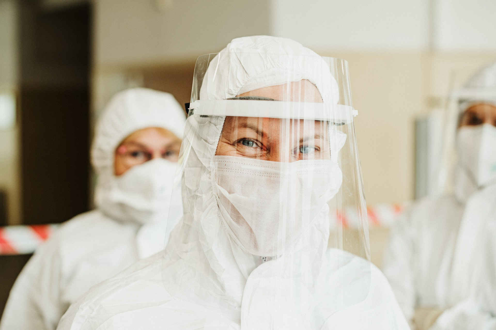

• Stay at home all the time, unless there is a medical reason for travel.
• Practice good hand hygiene. Wash your hands for more than 20
seconds, including in between your fingers and under fingers and
under your nails using plenty of soap and water. Otherwise, use an
alcohol based sanitizer with more than 60% alcohol. Do this
frequently, especially before you eat, after you use the restroom, blow
your nose or cough, or before you touch your face.
• Cover your cough and sneeze. The best way to cough or sneeze is into
your elbow.
• Stay in separate room with door closed. Use separate bathroom.
• Wipe all surfaces i.e. doorknobs, countertops, stairway railings and
switches, you come into contact with. Any bleach-containing
household product is effective.
• Wipe your phone with disinfectant wipes or 70% isopropyl alcohol as
it touches your hands and your face often.
• Wash your hands thoroughly after handling cash or credit cards as
their surface may have virus.
• Wear a facemask if you step out of your room or if someone enters
your room.
• Wash your hands before you wear your mask. Only touch ear loops.
• Protect your immune system by consuming balanced diet, staying
hydrated, avoiding alcohol, getting enough sleep and maintain healthy
weight.
• Daily monitor symptoms such as dry cough, shortness of breath, fever
>102 F, loss of taste & smell. It is good to have a finger pulse oximeter
at home to monitor oxygen saturation.
• Seek medical advice for chemoprophylaxisfor your family members
• Don’t panic
• Don’t visit public areas. Don’t use public transport.
• Don’t shake hands or hug. Use an alternative greeting maintaining 6-8
feet distance.
• Don’t touch your eyes, nose, mouth or face without washing your
hands.
• Don’t share water, utensils, towels or bedding with family members.
• Don’t visit older relatives or community members, as they are most
vulnerable. Discourage visitors.
• Don’t discontinue self-quarantine until instructed

Monitor your symptoms regularly. If you get any one of the following, seek
emergency medical care immediately:
• Worsening shortness of breath/ trouble breathing and cough.
• If you are using a pulse oximeter, oxygen saturation less than 95%.
• Worsening ability to concentrate/confusion.
• Bluish lips or face.
• A new or returning fever or persistent fever more than 101o F for 3 days.
• Persistent pain or pressure in the chest.
• Inability to wake or stay awake.
• You can contact at 108 for Emergency help